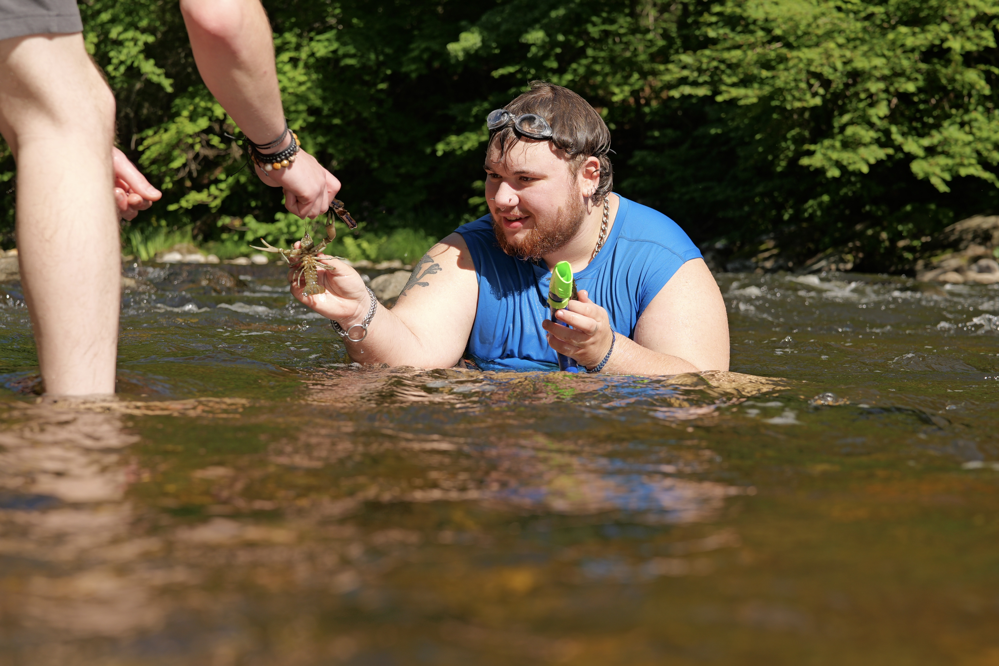

The Utility Function
As a recap, the function the calculator uses is simple: $$E\{AskingCrushOut|B, C, p\}=Bp-C(1-p)$$
Where $E\{...\}$ is the expected value of asking someone out, $B$ represents the potential benefits of doing, $C$ the potential costs, and $p$ the probability that the crush is reciprocal. This function is useful for its simplicity. With few parameters, it’s easy to specify prior distributions for each, which you can then use to run a bunch of Monte Carlo simulations to get estimates of the posterior distributions of the expected value. That said, the simplicity of the function masks the conceptual difficulty of quantifying the potential outcomes of asking someone out. How is someone meant to account for the benefits of a fruitful romantic relationship or the costs of a friendship that sours after asking someone out? To those who argue that reconciling love with a literal hedonic calculus is absurd, I agree. Human interaction is too elaborate, irrational, and moving for a utility function to capture, but in an effort to make my friends laugh—as well as to potentially convince them to make a move—I happily played the part of hapless utilitarian.
In this role, I asked Oscar the following question: If you knew that your crush liked you, how much would I have to pay you not to ask them out? This formulation collapses the number of complicating factors that you would otherwise face in putting a number to the benefits of asking someone out. The range of social possibilities that emerge from a romantic (platonic, or familial) relationship is unfathomable and overwhelming in its scope, and it’d be impossible to assign probabilities to each as microeconomics’ perfect utility maximizer would.2 How much money you’d need in order not to do something, however, is so tangible that it’s intuitive.3
Having said that, this operationalization is meaningfully flawed because it is framed in starkly egoistic terms, which is especially problematic in the case of evaluating costs: If you knew that person X does not like you romantically, how much would I have to pay you to ask them out?
What if asking someone else out causes them to be uncomfortable, especially in the event that you had already been rejected? My blithe hope is that people can adequately internalize the harm that they may cause others—whether through shame, guilt, embarrassment, or another salient affect—and embed that harm into the utility function that I proposed above, but I recognize that this assumption is too strong to be plausible in all or most cases.4 The unlikelihood of this underlying hope prompts me to consider the ethics of the crush calculator.
The Ethics of the Crush Calculator
For the sake of discussion, let's make another unbelievable assumption, that the crush calculator were to be used beyond our narrow group of friends. Most users (I figure) would use it for the joke that it is:
Ha-ha funny, like a modern day Zoltar.
To the point that the Crush Calculator could be used both seriously and well, I imagine that it could be lightly informative. It would motivate people to think differently about the stakes of asking someone out and realize that it's not that deep (at least, in most cases). Alternatively, it could prompt someone to be curious about another person in the name of updating their priors. In either case, the calculator acts as a way of systematizing people's thought process behind asking someone out.
But it'd be so easy to use the crush calculator poorly.
As I see it, the most problematic outcome would be that someone uses it for self-legitimation. Because anyone can specify their priors in any manner that they'd like, people can create outlandish scenarios that give meaningless authority to their Quixotic romanticism. People will see what they look for, and then act off what they find, potentially leading to discomfort for others implicated.
The problem of self-legitimation is more widely embedded in utilitarianism, beyond the crush calculator, but people have found ways to attenuate it by creating processes through which priors are specified inter-subjectively. In philanthropy, you can identify the benefits of a policy intervention through easily measurable outcomes that are not obviously tied to anyone's subjective experience—mortality rates, disease incidence, etc.—and optimize on those outcomes. Economics has then provided us with an epistemology, enabling for consensus to be constituted.5
In the case of the crush calculator, there is neither an epistemology nor any easily measurable outcomes to inform decision making. How are we to evaluate the success of a relationship that exists, much less one that may never? Without a coherent process of assigning priors, how are we meant to inoculate ourselves against self-legitimation and stop ourselves from letting utilitarianism confer our decision making with the meaningless impression of morality?
In all sincerity (and as you might suspect at this point), my concern in this respect is not actually motivated by the crush calculator, but in fact, by nuclear weapons. I've been working on this post for far too long, however, to elaborate on nukes.
Life Updates
See footnote one for the update on my job status.
Going to go camping with Lucia this weekend in Connecticut. I'm looking forward to it! It will likely rain, but I have some fun stuff planned nonetheless.
Two days ago, I hung out with Jason and Perseus (high school friends), and we went swimming in a local river and then got Diner food. Jason and I split a five stack of banana chocolate chip pancakes and a dish of french toast with fruit and whipped cream. Plates clean in less than ten minutes.
